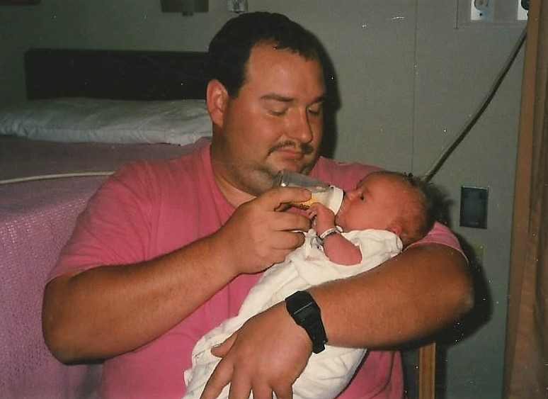

Once there was a young woman

Once there was a young woman
and a young man.

and as they grew older

they arrived at the same high school.
Jesse joined football

Christy joined band.

Then they fell in love.
Love found them at the young ages of fourteen and fifteen in their freshman and sophomore years of highschool.
Through the years they survived through many dances
in many beautiful outfits
and eventually they got married!

The next year Joseph came along.
He was so cute.

But then came Jessica!
and they were even cuter together than apart.

So let's just take a break to appreciate how beautiful these children are...

Oh man.
Yep.
These are beautiful kids.
I bet they grew up to be just as beautiful...
Alright break is over!
Jesse and Christy had a second marriage in the Catholic Church
and the kids started school.

Joseph made it through middle school

and Jessica followed shortly after.

Then the kids were off to high school.

...
And then Joseph introduced Cassie to the Quinn Family
and Joseph fell in love.
...
...
Suddenly there was a wedding to plan!

And it was beautiful!

Christy and Joseph shared a first dance
and both Jesse and Christy got schooled in their dancing skills by the young couple.
...
And Jesse and Christy's story is still only growing.